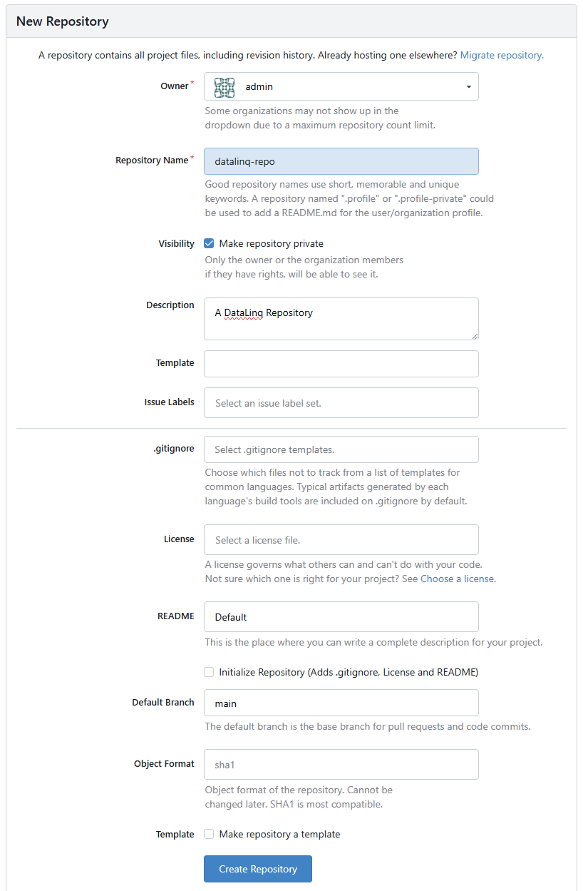
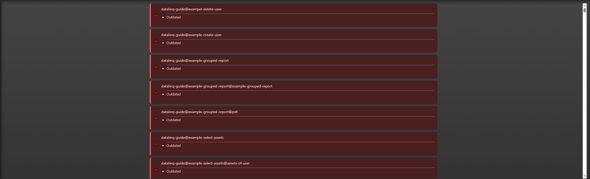
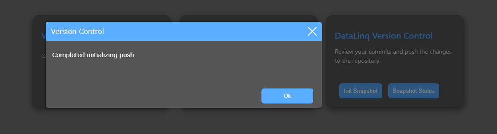
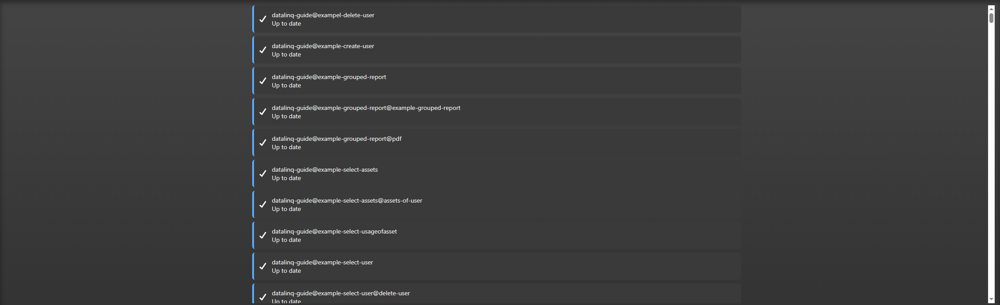
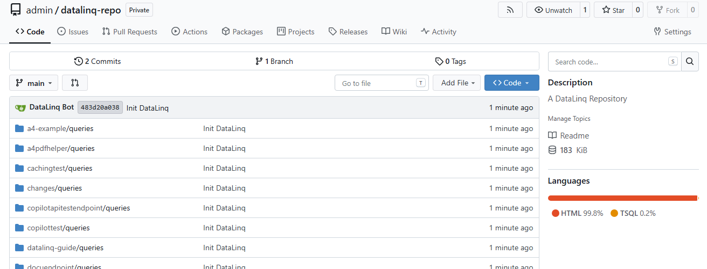
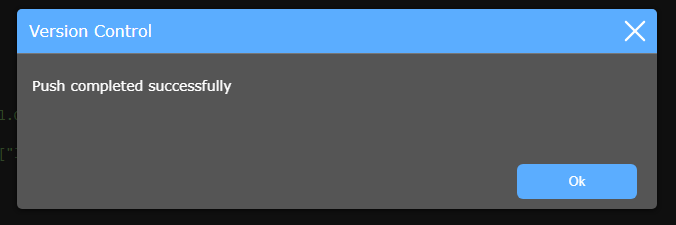
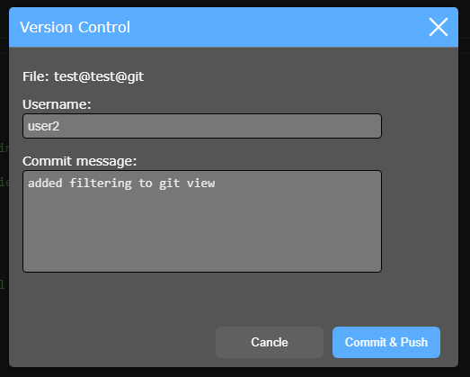

DataLinq Version Control¶
With DataLinq Version Control, the code of views and queries can be backed up to an external version control system (Git), for example Gitea, GitHub, or comparable platforms.
Goals and Benefits¶
Connecting to Git provides several important benefits:
Resilience: relevant changes additionally exist outside the running DataLinq instance.
Traceability: changes can be tracked in a structured way.
Transparency within the team: every change can be documented with author and reason for the change.
When changes are made, commits with name and change message can be created in DataLinq. This makes it clear later who changed something, when the change was made, and what purpose the change served.
Recommendation for Operation¶
For production environments, it is recommended to use an internal Git repository and not a publicly accessible repository instance.
This way, content and change history remain within a controlled infrastructure.
Example in This Documentation¶
In this documentation, the setup is shown as an example using a local Gitea instance.
The configuration is done in the API application under the Configuration section. There, the credentials for the target repository must be entered, for example user name and password, or alternatively an access token.
Creating a Repository¶
To use it with DataLinq, a repository must first be created in the desired Git system.
Log in to your own Git system.
Create a new repository.

Enter the repository details.
It is important here that the branch name and repository name match the values in the DataLinq API Configuration.

After creation, copy the repository URL and enter it in the DataLinq settings.
- Afterwards, you can decide whether to initialize the repository locally yourself
or let DataLinq handle the initialization.

Initialization in DataLinq (Snapshot)¶
After the repository configuration, additional buttons are shown on the DataLinq home page:
Init Snapshot
Snapshot Status

Snapshot Status¶
Right after setup, Snapshot Status usually shows that nothing is up to date yet, since no content has been transferred to version control yet.

Init Snapshot¶
Init Snapshot starts the initialization process. DataLinq asks for confirmation beforehand.
Warning
The init process should only be performed once, right at the beginning, since it merges all existing content into a shared initial commit.

After successful initialization, a success message is shown.

Status After Initialization¶
Afterwards, Snapshot Status shows that all files are in sync with version control.

Verification in the Git Repository¶
The automatic initialization is also visible in the Git repository afterwards, including the first initial commit and the transferred query and endpoint files.

Files:

Commit Workflow in the DataLinq Code Editor¶
When a new query or view is created in the DataLinq Code Editor, or an existing query/view is changed, the Git icon in the toolbar signals the status.
If the icon is red, local changes exist and the state is not yet synchronized.

After clicking the Git icon, a commit can be created. This records name and message.

After a successful commit, a success message is shown.

Afterwards, the Git icon turns green and shows the synchronized status.

If further changes are made afterwards (for example, by another user), the icon switches back to red.

After another commit, the current state is synchronized again.

The new commits, including commit messages, are then visible in the Git repository.

The exact changes can be tracked.